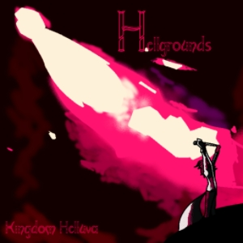
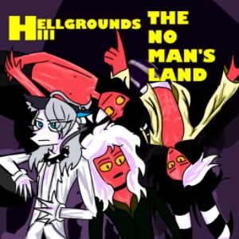
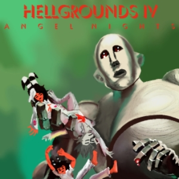
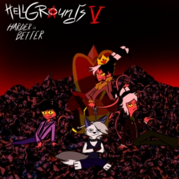
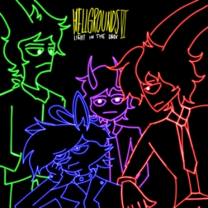

Discografia de los Hellgrounds
Hellgrounds Vol. 1 (1974/2014)
Way To Surface (1975/2015)
The No Man's Land (1976/2016)
Angel Nights (1977/2017)
Harder Is Better (1979/2019)
Light In The Dark (1983/2023)